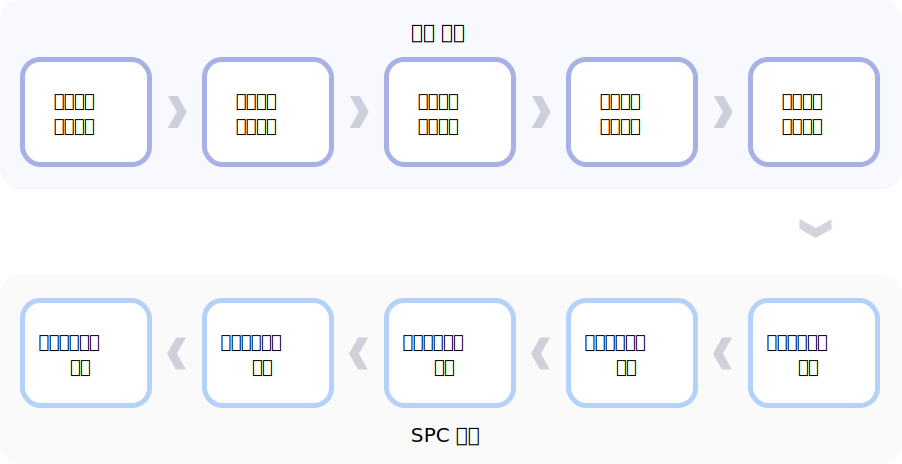
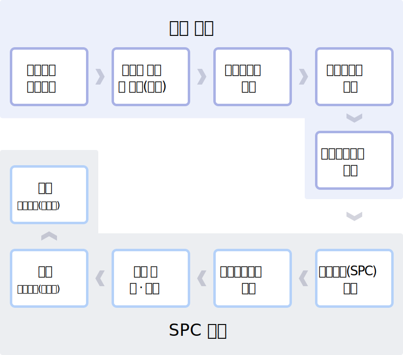

@@include('include/header.html')
본문시작
개발안내
철도자산 개발안내
점용허가를 통한 철도자산개발(철도의 건설 및 철도시설 유지관리에 관한 법률 제23조의2)
-
국가가 소유·관리하는 철도시설, 폐선로 및 폐역사(부지를 포함한다), 유휴지 등 철도 관련 국유재산(「철도산업발전기본법」 제22조제1항제1호의 운영자산은 제외한다)에 건물이나 그 밖의 시설물을 설치하려는 자에게「국유재산법」제18조(영구시설물 축조 금지)에도 불구하고 점용허가를 통해 영구시설물 축조 가능
-
점용허가 받은 자가 설치한 시설물 전대 금지조항 없음(임대사업 가능)
-
점용허가기간은 건물 종류와 구조에 따라 최대 30년 이내 가능
자산개발 추진절차


개발사업 민간제안(공단 철도자산개발 및 운영규정 제23조)
제안서 평가 및 채택(공단 철도자산개발 및 운영규정 제25조)
-
공단 자산개발위원회의의 제안서 심의를 거쳐 평가점수(70점) 이상이고 심의위원 3분의 2이상 찬성으로 채택
-
자산개발담당부서에서 심의결과를 제안자에게 서면으로 통지
-
채택된 민간제안사업의 제안자가 사업주관자 공모에 참여할 경우 총평가점수의 3% 범위 내에서 가점 부여
사업주관자 공모(공단 철도자산개발 및 운영규정 제10조)
-
사업주관자 모집은 일간신문 및 공단 홈페이지에 공고
-
사업신청자는 개발사업을 수행할 능력이 있는 단독법인 또는 컨소시엄
-
모집공고 명시사항 및 사업계획서 작성내용은 ‘법령 및 자료집’의 공모지침서(표준안) 참조
-
사업계획서 작성 및 사업신청 등에 소요되는 제반비용은 사업신청자의 부담
-
사업신청자는 사업계획서상 총사업비의 100분의 2에 해당하는 “신청보증금” 납부
-
신청보증금은 현금 또는 보증서로 납부, 보증기간은 사업협약이행보증금 납부예정일 이후로 함
-
신청보증금의 공단 귀속 및 반환은「공단 철도자산개발 및 운영규정」제14조 참조
사업계획서 평가(공단 철도자산개발 및 운영규정 제16조)
사업추진협약 체결(공단 철도자산개발 및 운영규정 제19조)
-
사업주관자 후보자로 선정된 자는 선정결과를 통보 받은 날로부터 30일 이내 공단과 협약 체결
-
사업주관자로 선정된 자는 사업추진협약체결일까지 총사업비의 100분의 5이상에 상당하는 협약이행보증금을 현금 또는 보증서로 납부, 보증기간은 시설물의 준공일로부터 3년 이후로 함
출자회사(SPC) 설립(공단 철도자산개발 및 운영규정 제27조)
종합개발계획수립(철도자산 개발 및 운영규정 제29조)
설계 및 인·허가(철도자산 개발 및 운영규정 제30~31조)
건 설(철도자산 개발 및 운영규정 제6조, 제32~37조)
-
출자회사는 철도시설부지내 공사 시행을 위하여 공단과 공사시행협약 체결
-
공사시행에 따른 지장물의 철거나 이설에 소요되는 비용은 출자회사가 부담
-
출자회사는 철도시설의 공사 중 점용허가를 받은 후 공사를 착수하여야 하며 공사기간 중 점용허가재산에 대한 점용료를 납부하여야 함
-
출자회사는 국가귀속시설이 없는 경우, 총공사비의 5%(부가세 별도)의 철도시설기여금을 납부하여야 함
-
출자회사는 공사가 완료되면 국가귀속시설과 영업시설을 구분하여 시설물 내역과 준공금액 등을 포함한 준공조서 및 준공도를 공단에 제출·확인 받아야 함
운 영(철도시설 점용허가 업무처리 규정 제5조, 제16조)
점용허가와 사용허가 비교
| 구분 |
점용허가 |
사용허가 |
| 법률근거 |
-철도사업법
-철도의 건설 및 철도시설 유지관리에 관한 법률
|
-국유재산법 |
| 허가받는자 |
-철도사업자 및 철도사업자가 출자한 법인
-공단 및 공단이 출자한 법인
|
-국가 외의 자 |
| 허가자 |
-국토부장관
-공단에 업무위임
|
-국토부장관
-공단에 업무위임
|
| 영구시설물 축조 |
-가능
|
-불가 |
| 허가받은자 전대(재임대) |
-가능
|
-불가 |
| 사용료징수 |
-점용료 징수
-재산가액은 2개 이상 감정푱가액을 산술평균하여 적용
-요율 0.3%~5%이상
|
-사용료 징수
-재산가액은 개별공시지가 적용
-요율 1~5%이상
|
| 허가기간 |
-30년 이내
|
-5년 이내
|
유의사항
@@include('include/footer.html')